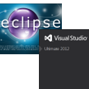

Dreamspark SDM Odysee |
Recent Posts all posts

|
Why I prefer Linux over Windows |
|
|
PDF-Printing on Windows 7 |
|  |
Why are Microsoft products so User unfriendly? |
Microsoft product flavor hell |